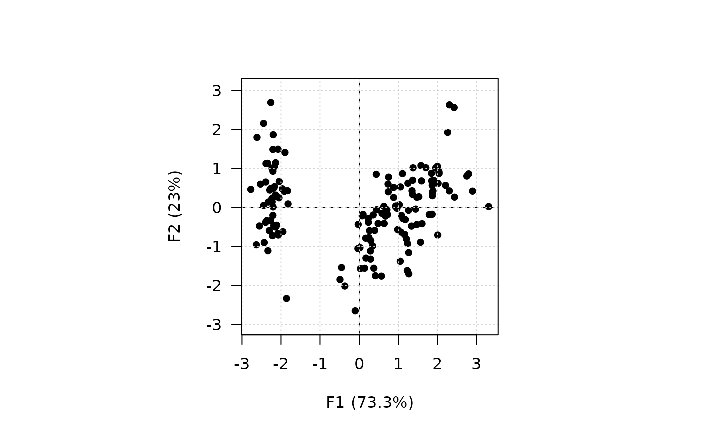
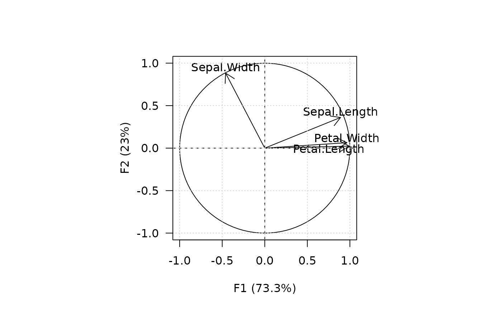
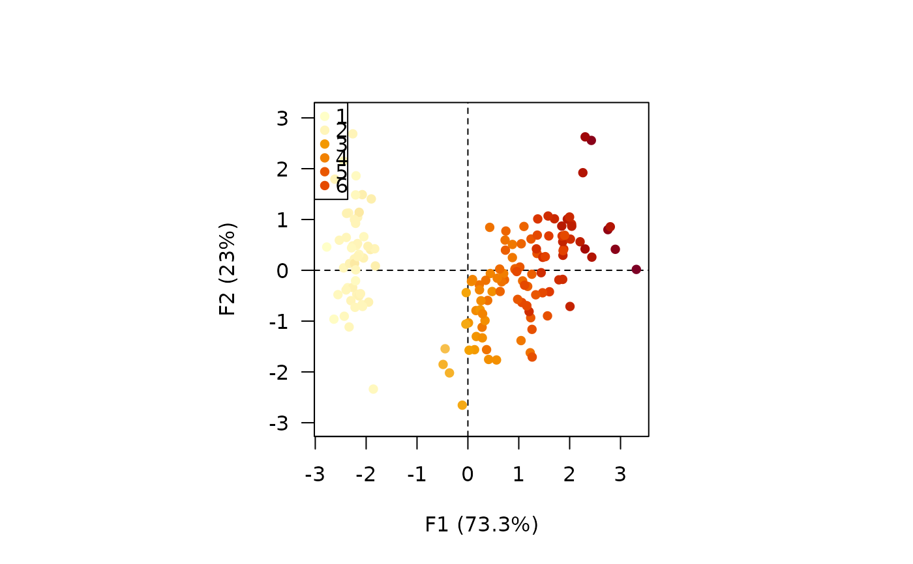
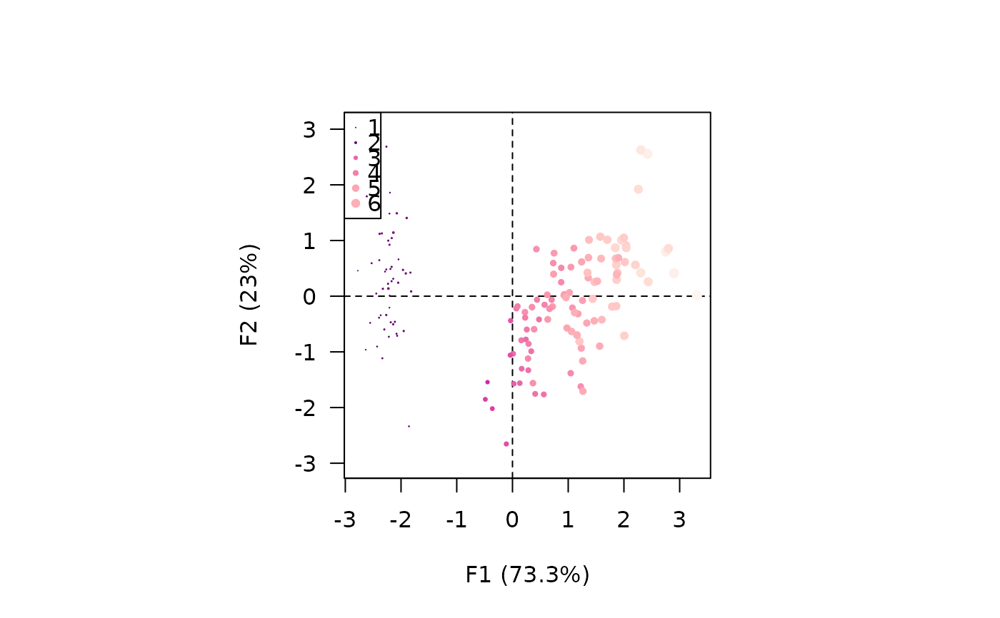
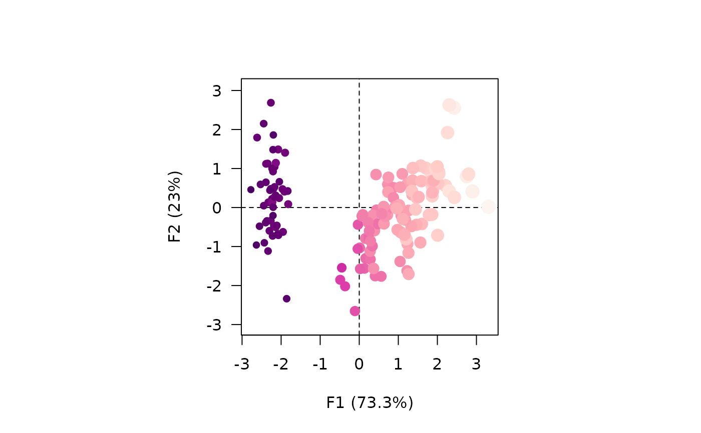
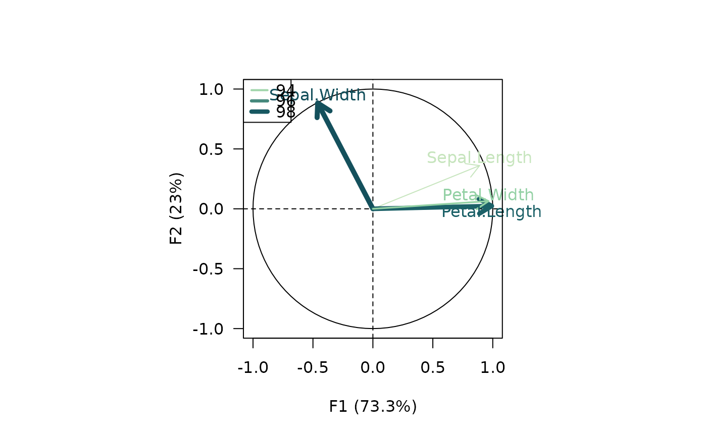
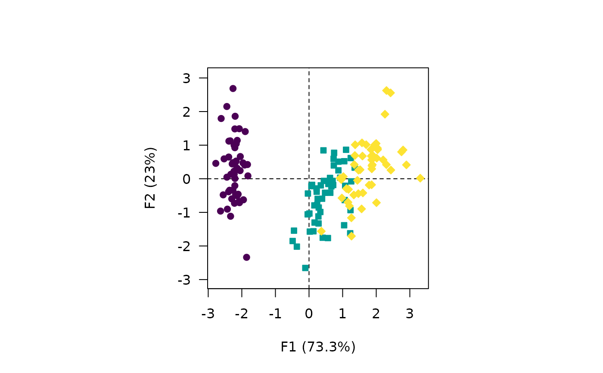
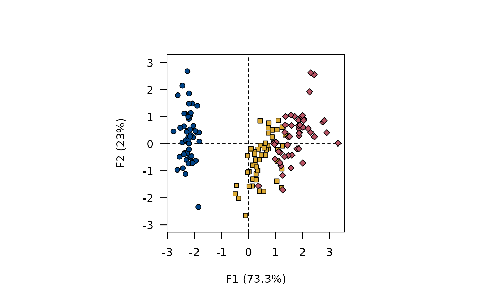
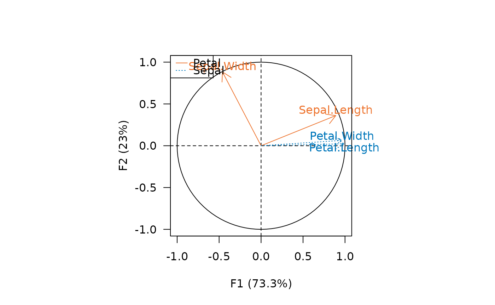

Plots column/variable principal coordinates.
Usage
viz_variables(x, ...)
viz_columns(x, ...)
# S4 method for MultivariateAnalysis
viz_columns(
x,
axes = c(1, 2),
active = TRUE,
sup = TRUE,
labels = FALSE,
highlight = NULL,
xlim = NULL,
ylim = NULL,
main = NULL,
sub = NULL,
panel.first = NULL,
panel.last = NULL,
...
)
# S4 method for BootstrapCA
viz_columns(x, axes = c(1, 2), ...)
# S4 method for PCA
viz_variables(
x,
axes = c(1, 2),
active = TRUE,
sup = TRUE,
labels = TRUE,
highlight = NULL,
xlim = NULL,
ylim = NULL,
main = NULL,
sub = NULL,
panel.first = NULL,
panel.last = NULL,
...
)
# S4 method for CA
viz_variables(
x,
axes = c(1, 2),
active = TRUE,
sup = TRUE,
labels = FALSE,
highlight = NULL,
xlim = NULL,
ylim = NULL,
main = NULL,
sub = NULL,
panel.first = NULL,
panel.last = NULL,
...
)
# S4 method for BootstrapPCA
viz_variables(x, axes = c(1, 2), ...)Arguments
- x
- ...
Further graphical parameters (see details).
- axes
A length-two
numericvector giving the dimensions to be plotted.- active
A
logicalscalar: should the active observations be plotted?- sup
A
logicalscalar: should the supplementary observations be plotted?- labels
A
logicalscalar: should labels be drawn?- highlight
A vector specifying the information to be highlighted. If
NULL(the default), no highlighting is applied. It will only be mapped if at least one graphical parameters is explicitly specified (see examples). If a singlecharacterstring is passed, it must be one of "observation", "mass", "sum", "contribution" or "cos2" (seeaugment()). Any unambiguous substring can be given.- xlim
A length-two
numericvector giving the x limits of the plot. The default value,NULL, indicates that the range of the finite values to be plotted should be used.- ylim
A length-two
numericvector giving the y limits of the plot. The default value,NULL, indicates that the range of the finite values to be plotted should be used.- main
A
characterstring giving a main title for the plot.- sub
A
characterstring giving a subtitle for the plot.- panel.first
An an
expressionto be evaluated after the plot axes are set up but before any plotting takes place. This can be useful for drawing background grids.- panel.last
An
expressionto be evaluated after plotting has taken place but before the axes, title and box are added.
Value
viz_*() is called for its side-effects: it results in a graphic
being displayed. Invisibly returns x.
Details
Commonly used graphical parameters are:
pchA vector of plotting characters or symbols. This can either be a single character or an integer code for one of a set of graphics symbols.
cexA numerical vector giving the amount by which plotting characters and symbols should be scaled relative to the default.
ltyA vector of line types.
lwdA vector of line widths.
colThe colors for lines and points. Multiple colors can be specified so that each point can be given its own color.
bgThe background color for the open plot symbols given by
pch = 21:25.
See also
Other plot methods:
biplot(),
screeplot(),
viz_contributions(),
viz_individuals(),
viz_wrap,
wrap
Examples
## Load data
data("iris")
## Compute principal components analysis
X <- pca(iris, scale = TRUE)
#> 1 qualitative variable was removed: Species.
## Plot individuals
viz_individuals(X, panel.last = graphics::grid())

## Plot variables
viz_variables(X, panel.last = graphics::grid())

## Graphical parameters
## Continuous values
viz_individuals(X, highlight = iris$Petal.Length, pch = 16)

viz_individuals(X, highlight = iris$Petal.Length, pch = 16,
col = grDevices::hcl.colors(12, "RdPu"))

viz_individuals(X, highlight = iris$Petal.Length, pch = 16,
col = grDevices::hcl.colors(12, "RdPu"),
cex = c(1, 2))

viz_variables(X, highlight = "contribution",
col = grDevices::hcl.colors(12, "BluGrn", rev = TRUE),
lwd = c(1, 5))

## Discrete values
viz_individuals(X, highlight = iris$Species, pch = 21:23)

viz_individuals(X, highlight = iris$Species, pch = 21:23,
bg = c("#004488", "#DDAA33", "#BB5566"),
col = "black")

viz_variables(X, highlight = c("Petal", "Petal", "Sepal", "Sepal"),
col = c("#EE7733", "#0077BB"),
lty = c(1, 3))
